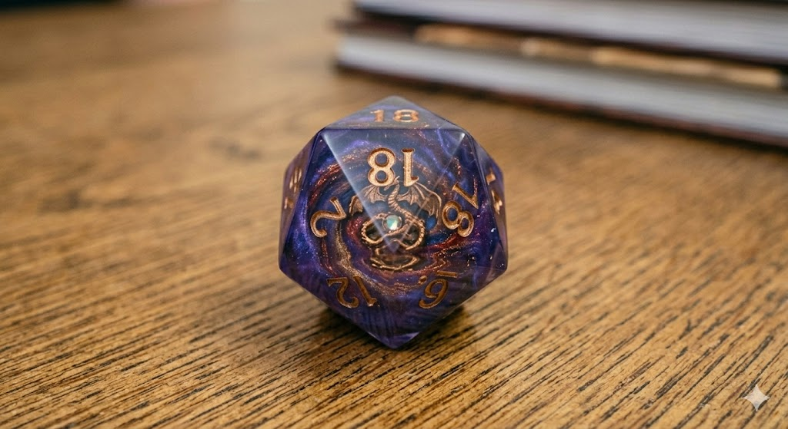

O são dados e cubos?
Seja no mundo da geometria pura ou em uma noite de jogos de tabuleiro, o cubo é uma das formas mais fascinantes e equilibradas do universo. A função do dado é gerar um resultado aleatório que fica restrito ao número de faces dele. Esse resultado, então, pode ser manipulado (caso seja um número) através de fórmulas caso o jogo exija. Por exemplo, um número entre 20 e 25 utilizando dados de seis lados exige a aplicação de uma fórmula matemática. Os dados são comumente utilizados em jogos de tabuleiro tradicionais e jogos de RPG.
